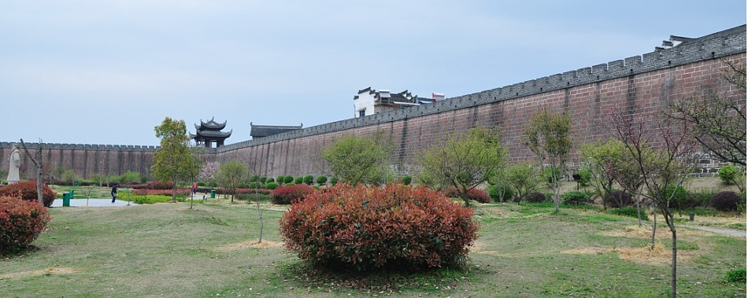
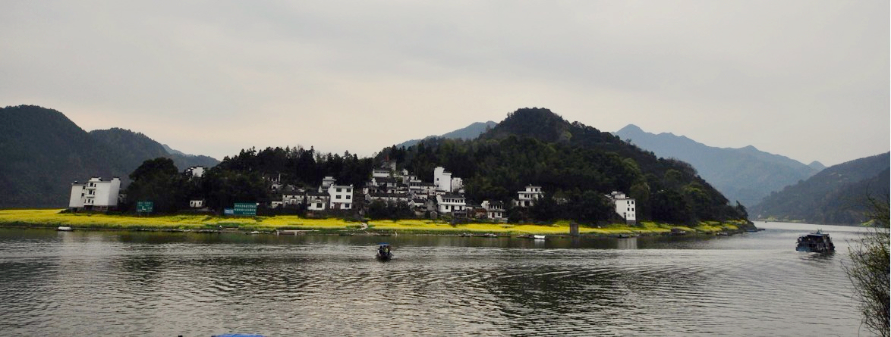
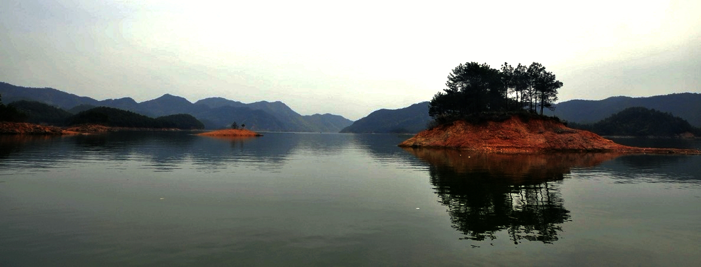
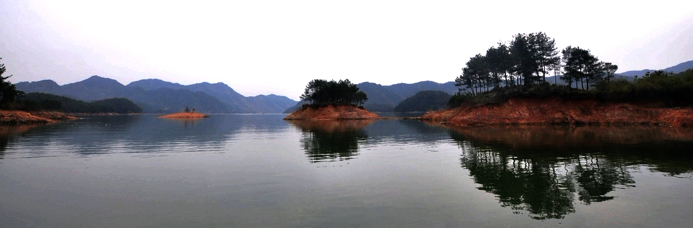
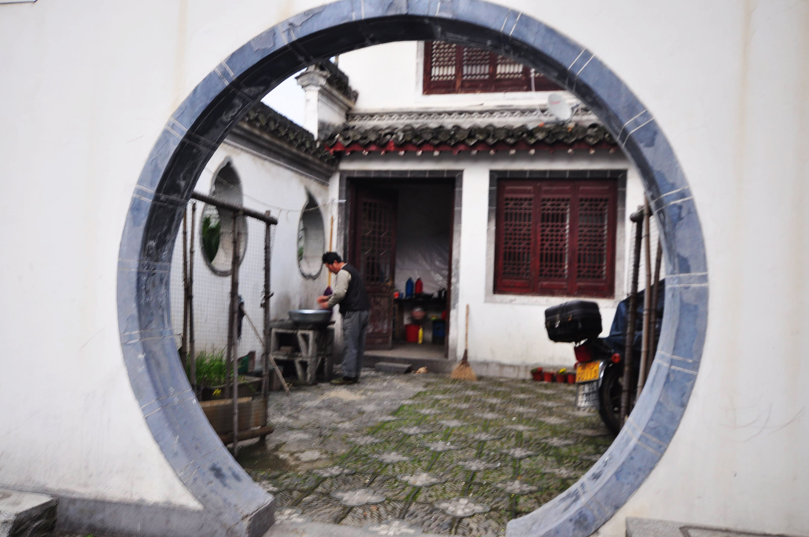
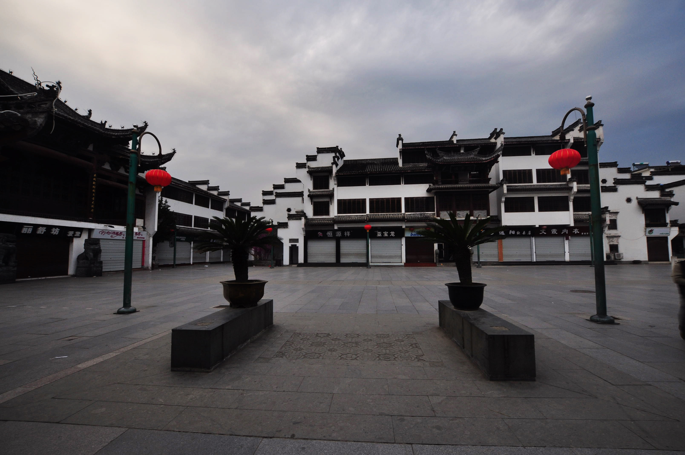
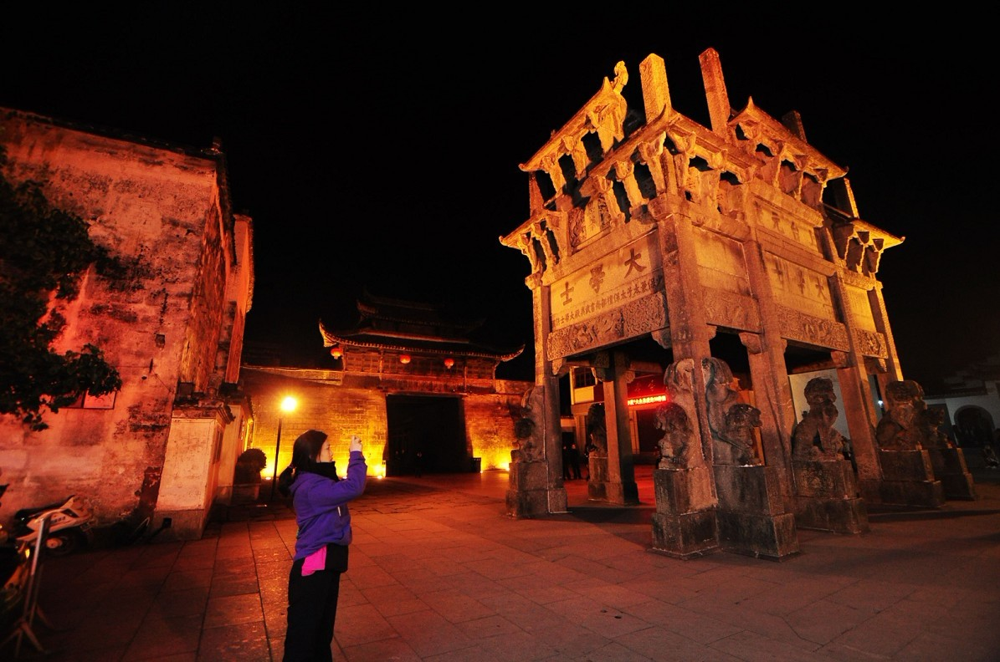
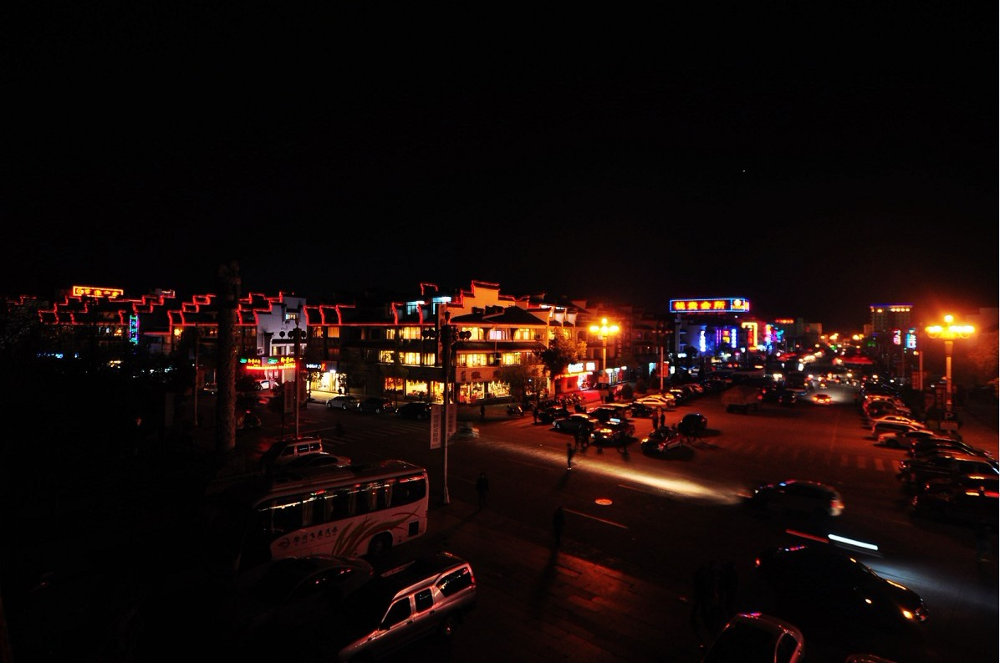
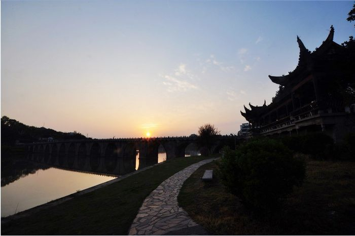

发信人: yahuo (牙火虫), 信区: outdoor
标 题: Re: 三清山真的很美！歙县、新安江也很赞
发信站: 饮水思源 (2012年04月14日03:19:51 星期六)
古城墙
 screen.width - 200){this.width = screen.width - 200}">
超级搞笑的南浦大桥
screen.width - 200){this.width = screen.width - 200}">
新安江沿途风景
 screen.width - 200){this.width = screen.width - 200}">
 screen.width - 200){this.width = screen.width - 200}">
 screen.width - 200){this.width = screen.width - 200}">
screen.width - 200){this.width = screen.width - 200}">
 screen.width - 200){this.width = screen.width - 200}">
 screen.width - 200){this.width = screen.width - 200}">
牌坊？
 screen.width - 200){this.width = screen.width - 200}">
歙县夜景
 screen.width - 200){this.width = screen.width - 200}">
古老的大桥
screen.width - 200){this.width = screen.width - 200}">
歙县桥头
 screen.width - 200){this.width = screen.width - 200}">
--
我听到了上帝与灵魂的对话：趁还活着，跟喜欢的人在一起，做喜欢的事。因为，人生如白驹过隙！一辈子短得来不及听一首歌，说一句话，就完蛋了。在葛莎雀吉空灵的歌声中，我回归到灵魂，听见自己笑着哭，突然领悟哭跟笑其实一样完美。
※ 来源:·饮水思源 bbs.sjtu.edu.cn·[FROM: 114.94.77.229]
|